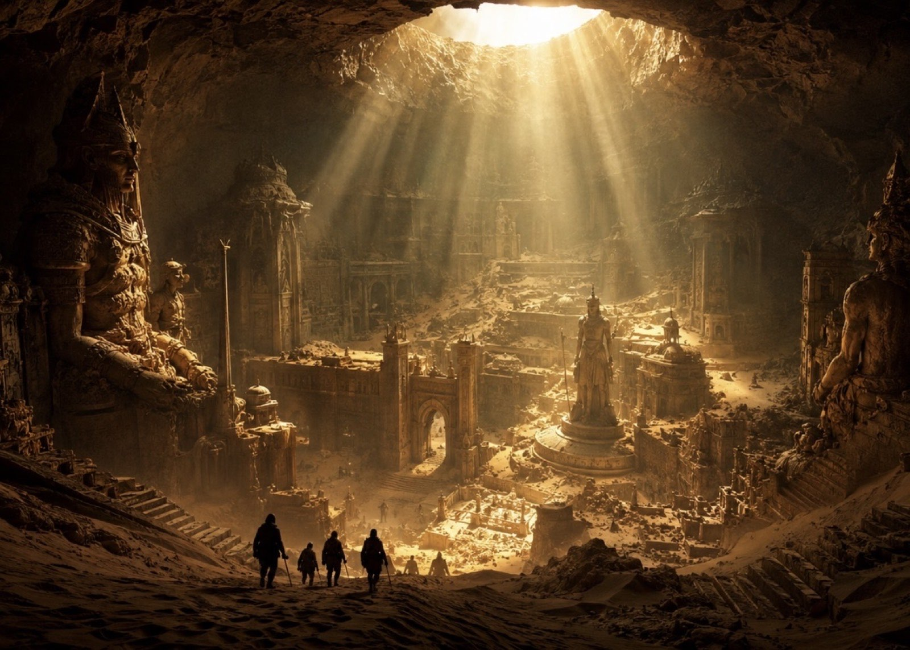
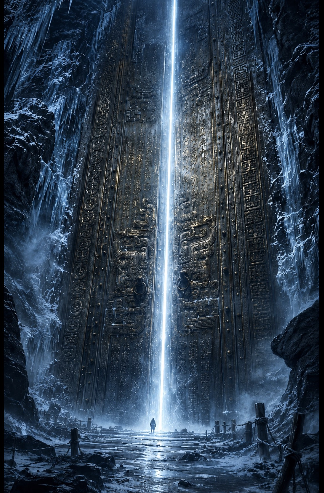

The Lost Tomb Archive
Welcome to The Lost Tomb Archive, an escape room house built out of six tombs that were never properly closed. Tonight you travel with Wu Xie, Zhang Qiling and Fatty Wang, and every room you enter is a case the three of them walked out of without an answer.
Six regions, six locked rooms, six files that still end in the middle of a sentence. Choose a case below, read what the last team left behind, and see whether you can reach the end of the page they could not.


